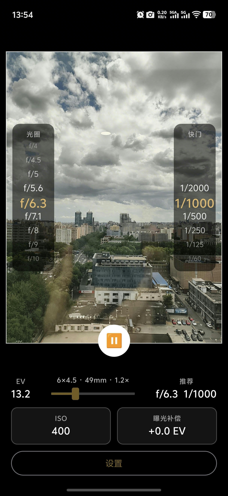
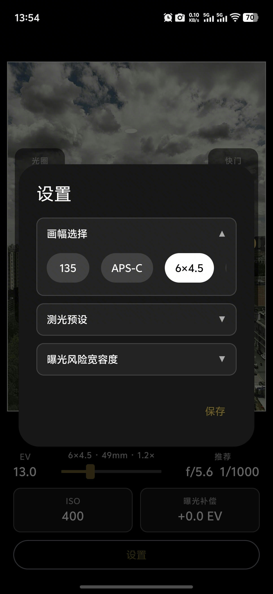
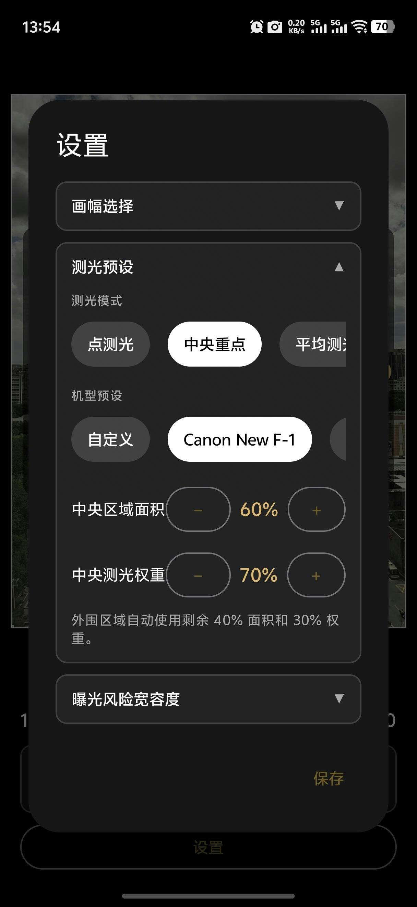
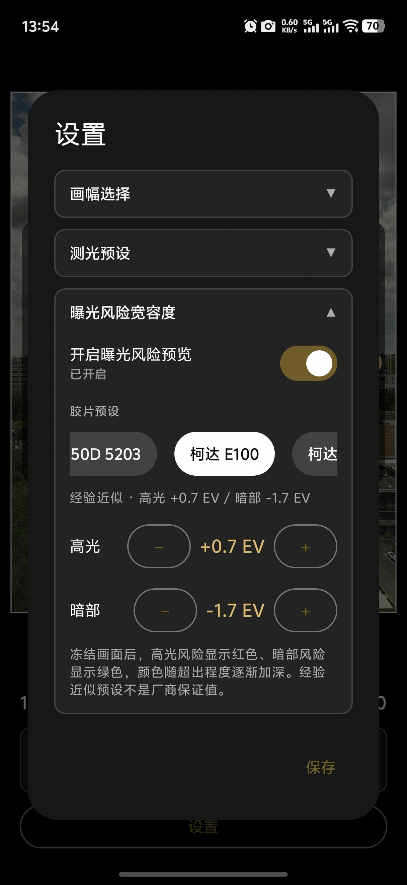
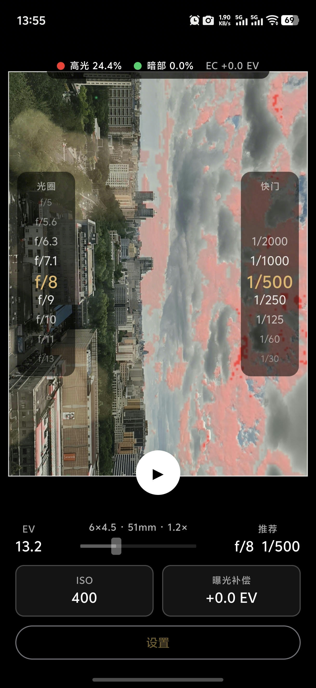

<meta charset="utf-8">
<title>FilmLightMeter 快速使用指南</title>
<style>
  @page { size: A4; margin: 14mm; }
  * { box-sizing: border-box; }
  html { color-scheme: light; background: #fff; }
  body {
    margin: 0;
    background: #fff;
    color: #202020;
    font-family: "PingFang SC", "Hiragino Sans GB", "Heiti SC", sans-serif;
    font-size: 13px;
    line-height: 1.55;
  }
  .page {
    min-height: 269mm;
    background: #fff;
    page-break-after: always;
    position: relative;
    overflow: hidden;
  }
  .page:last-child { page-break-after: auto; }
  h1 { margin: 0; font-size: 34px; letter-spacing: .5px; }
  h2 { margin: 0 0 12px; font-size: 23px; }
  h3 { margin: 12px 0 5px; font-size: 16px; }
  p { margin: 5px 0; }
  ol, ul { margin: 6px 0; padding-left: 22px; }
  li { margin: 4px 0; }
  strong { color: #8a681d; }
  .eyebrow { color: #9a7525; font-weight: 600; letter-spacing: 2px; }
  .subtitle { color: #666; font-size: 17px; margin-top: 8px; }
  .hero {
    margin-top: 18px;
    height: 158mm;
    border-radius: 22px;
    background: #111;
    display: flex;
    justify-content: center;
    overflow: hidden;
  }
  .hero img { height: 100%; width: auto; }
  .steps {
    display: grid;
    grid-template-columns: repeat(3, 1fr);
    gap: 9px;
    margin-top: 14px;
  }
  .step, .card, .note {
    border: 1px solid #ded9cf;
    border-radius: 12px;
    padding: 10px 12px;
    background: #faf8f3;
  }
  .step b {
    display: inline-flex;
    width: 22px;
    height: 22px;
    margin-right: 5px;
    align-items: center;
    justify-content: center;
    border-radius: 50%;
    color: white;
    background: #9a7525;
  }
  .two {
    display: grid;
    grid-template-columns: 44% 1fr;
    gap: 15px;
    align-items: start;
  }
  .shot {
    width: 100%;
    max-height: 228mm;
    object-fit: contain;
    border: 1px solid #ddd;
    border-radius: 13px;
    background: #080808;
  }
  .stack { display: grid; gap: 9px; }
  .label {
    display: inline-block;
    padding: 2px 8px;
    border-radius: 999px;
    color: #725310;
    background: #f0e5c8;
    font-weight: 600;
  }
  .risk {
    display: grid;
    grid-template-columns: 1fr 1fr;
    gap: 10px;
  }
  .settings-shots {
    display: grid;
    grid-template-columns: repeat(3, 1fr);
    gap: 8px;
    margin-bottom: 10px;
  }
  .settings-shots img {
    width: 100%;
    height: 122mm;
    object-fit: cover;
    object-position: top center;
    border: 1px solid #ddd;
    border-radius: 12px;
    background: #080808;
  }
  .settings-grid {
    display: grid;
    grid-template-columns: repeat(2, 1fr);
    gap: 9px;
  }
  .red { border-left: 5px solid #ef4444; }
  .green { border-left: 5px solid #22b866; }
  .tip { border-left: 4px solid #c2952f; }
  .muted { color: #6b6b6b; }
  .footer {
    position: absolute;
    bottom: 0;
    left: 0;
    right: 0;
    color: #888;
    font-size: 10px;
    text-align: center;
  }
</style>

<section class="page">
  <div class="eyebrow">胶片摄影测光工具</div>
  <h1>FilmLightMeter</h1>
  <div class="subtitle">快速使用指南</div>
  <div class="hero">
    
  </div>
  <div class="steps">
    <div class="step"><b>1</b>选择胶片 <strong>ISO</strong></div>
    <div class="step"><b>2</b>读取推荐<strong>光圈 / 快门</strong></div>
    <div class="step"><b>3</b>冻结画面检查<strong>曝光风险</strong></div>
  </div>
  <p class="muted">这是反射式测光工具：使用时请将手机相机朝向被摄场景。</p>
  <div class="footer">FilmLightMeter · 快速使用指南</div>
</section>

<section class="page">
  <h2>1. 先看懂主界面</h2>
  <div class="two">
    
    <div class="stack">
      <div class="card">
        <span class="label">取景框</span>
        <p>白色边框内是实际参与测光和风险统计的区域。框外画面不参与计算。</p>
      </div>
      <div class="card">
        <span class="label">推荐组合</span>
        <p>左侧是光圈，右侧是快门。<strong>金色数值</strong>是当前推荐组合。</p>
        <p>上下拖动任一列表，可选择需要的景深或快门速度。</p>
      </div>
      <div class="card">
        <span class="label">EV 与推荐</span>
        <p><strong>EV</strong> 表示场景亮度；右侧“推荐”是结合 ISO 和曝光补偿得到的光圈/快门。</p>
      </div>
      <div class="card">
        <span class="label">焦段滑块</span>
        <p>调整滑块，使取景范围接近实际相机镜头。变焦期间保留上一测光结果，稳定后自动更新。</p>
      </div>
      <div class="card">
        <span class="label">点击点测光</span>
        <p>点击画面中的主体，可临时测量该位置。需要整体测光时恢复原测光预设。</p>
      </div>
      <div class="note tip">
        <strong>拍摄时怎么用？</strong>
        <p>将推荐的光圈和快门设置到胶片相机上，再根据主体明暗和创作意图微调曝光补偿。</p>
      </div>
    </div>
  </div>
  <div class="footer">2 / 5</div>
</section>

<section class="page">
  <h2>2. 第一次使用，只需设置这些</h2>
  <div class="settings-shots">
    
    
    
  </div>
  <div class="settings-grid">
    <div class="card">
      <h3>ISO</h3>
      <p>点击主界面的 ISO 卡片，选择当前胶片的有效 ISO。</p>
      <p class="muted">迫冲或降感时，填写实际用于曝光计算的 ISO。</p>
    </div>
    <div class="card">
      <h3>画幅</h3>
      <p>在设置中选择实际相机画幅：135、APS-C、6×4.5 或 6×6。</p>
    </div>
    <div class="card">
      <h3>测光模式</h3>
      <p><strong>中央重点</strong>适合日常场景；<strong>点测光</strong>用于主体、亮部或暗部；<strong>平均测光</strong>适合均匀画面。</p>
    </div>
    <div class="card">
      <h3>曝光风险宽容度</h3>
      <p>选择胶片预设，或自定义高光、暗部阈值。红色提示高光风险，绿色提示暗部风险。</p>
    </div>
    <div class="note tip" style="grid-column: 1 / -1;">
      <strong>记得点击“保存”</strong>
      <p>ISO、画幅、焦段、测光和风险设置会保存在本机，下次打开自动恢复。</p>
    </div>
  </div>
  <div class="footer">3 / 5</div>
</section>

<section class="page">
  <h2>3. 冻结画面，检查曝光风险</h2>
  <div class="two">
    
    <div class="stack">
      <div class="card">
        <h3>操作</h3>
        <ol>
          <li>画面稳定后，点击下方<strong>暂停按钮</strong>。</li>
          <li>等待应用完成明暗探测。</li>
          <li>观察红色、绿色蒙层和顶部风险比例。</li>
          <li>点击播放按钮恢复实时测光。</li>
        </ol>
      </div>
      <div class="risk">
        <div class="card red">
          <strong>红色</strong>
          <p>高光可能因曝光过度而丢失细节。</p>
        </div>
        <div class="card green">
          <strong>绿色</strong>
          <p>暗部可能因曝光不足而丢失细节。</p>
        </div>
      </div>
      <div class="card">
        <h3>颜色深浅</h3>
        <p>颜色越深，表示超出所选胶片宽容度越多。顶部百分比表示风险区域占取景框的比例。</p>
      </div>
      <div class="card">
        <h3>冻结后仍可调 EC</h3>
        <p>调整曝光补偿，风险图会基于同一画面重新计算，便于比较不同曝光方案。</p>
      </div>
      <div class="note tip">
        <strong>纯黑、纯白为何可能不标记？</strong>
        <p>应用会用额外探测帧判断是否真的出现新纹理，尽量避免把黑色背包、头发、白墙等固有颜色误判为细节丢失。</p>
      </div>
    </div>
  </div>
  <div class="footer">4 / 5</div>
</section>

<section class="page">
  <h2>4. 一套简单可靠的拍摄流程</h2>
  <div class="steps" style="grid-template-columns: 1fr 1fr;">
    <div class="step"><b>1</b>设置胶片 ISO、画幅和胶片预设</div>
    <div class="step"><b>2</b>用中央重点观察整体场景</div>
    <div class="step"><b>3</b>点击主体、亮部、暗部分别点测光</div>
    <div class="step"><b>4</b>按创作意图设置曝光补偿</div>
    <div class="step"><b>5</b>选择需要的光圈或快门</div>
    <div class="step"><b>6</b>冻结画面检查曝光风险</div>
  </div>
  <h3 style="margin-top:20px;">曝光补偿快速参考</h3>
  <div class="risk">
    <div class="card">
      <strong>正补偿 +EV</strong>
      <p>增加曝光。常用于雪景、白墙、逆光人物等容易被测暗的场景。</p>
    </div>
    <div class="card">
      <strong>负补偿 -EV</strong>
      <p>减少曝光。常用于夜景、黑色背景等容易被测亮的场景。</p>
    </div>
  </div>
  <h3 style="margin-top:18px;">使用时请注意</h3>
  <div class="stack">
    <div class="note">风险颜色是辅助判断，不等同于最终胶片或扫描结果。</div>
    <div class="note">手机 ISP、HDR、镜头污渍、玻璃反光和极暗环境都可能影响测光。</div>
    <div class="note">手持晃动或运动主体可能影响冻结后的明暗探测。</div>
    <div class="note">首次使用建议与可信测光表或已校准相机对照。</div>
  </div>
  <div class="card" style="margin-top:20px; text-align:center;">
    <strong style="font-size:18px;">核心逻辑</strong>
    <p style="font-size:16px;">设置胶片 → 读取推荐 → 选择组合 → 冻结检查风险 → 拍摄</p>
  </div>
  <div class="footer">5 / 5 · FilmLightMeter</div>
</section>
